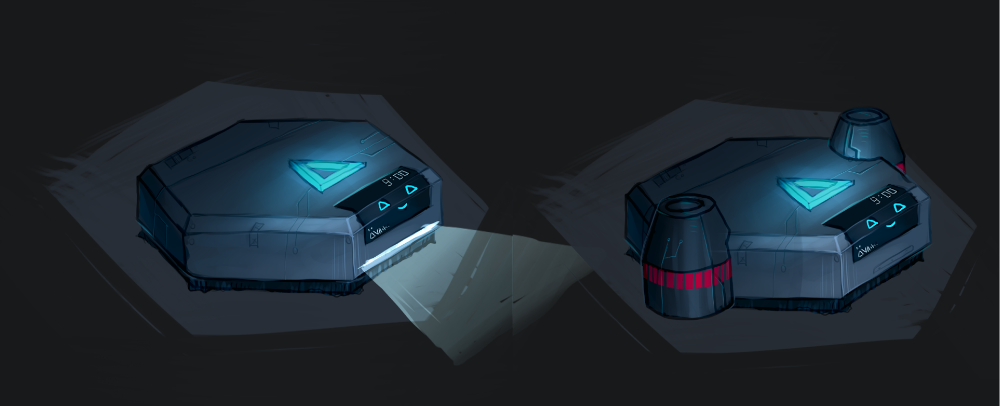

Dar Raná
Hearing a friend's pitch of the Dar Raná project I saw potential in the idea and helped establish the team. To ensure an adequate amount of working time we convinced our professors to make it an official study assignment. During the structuring phase the team placed a lot of trust in me, as I was named both the Lead Developer and Lead Game Designer.
- Genre: Narrative Adventure, Tactical Turn-based Combat
- Engine: Unity Game Engine
- Role(s): Lead Developer, Lead Game Designer, Narrative Designer
- Team Size: 10
- Development Time: 5 months
- Other Tools: JIRA, Jetbrains Rider, DOTween, SaintsField
My Contributions
Programming
Design and Implementation of an Event Bus based on the Pub-Sub Pattern
Designing the basic principles behind the game's Enemy AI, based on Lewis' Infinte Axis Utility System
Ensuring a clean Implementation of multiple game-wide Systems and their interactions.
Design and Implementation of multiple Systems, like Skills and Breakpoints, as Component Systems
Misc. other Programming tasks and Implementations like Health and Inventory
Leadership
Introduce less-experienced teammembers to advanced concepts, patterns and workflows in Unity, JIRA and Gitlab
Devlopment of Guidelines and Workflows for collaborative Programming within the team
Sprint Planning and Task Writing
Mediation between my team and other teams like Art and Sound Design
Listening and helping people, should they struggle or need help otherwise
Game Design
Organization of Playtests
Design for the Relationship system of the game
Providing Feedback on the Designs of my fellow Game Designers
Keeping Dar Rana's Game Design Document and Glossary organized and updated
Narrative Design
Help in writing the Story of the Prototype
Writing of key scenes in the first draft of Chapter 1: Bonds
Retrospective and Learnings
When the project was started I was quite excited, wanting to use it as one of the flagship projects for my portfolio. I wanted to really invest myself into this project and learn new things, hence why
I volunteered for the double Leadership Role in both Game Development and Game Design. From the beginning it was very clear to me, that this was going to be a lot of work on the technical side -
Motion Capturing, Development of two Core Gameplay Loops with overlapping aspects and a team size, including group politics, I was yet to enounter.
However I was undeterred and moved forward with a plan: Using my experiences, gathered from my Job at the BWS Consulting Group and previous projects, we put down structures and policies for
the Unity Game Engine, writing and reviewing Code. Writing those into documents, which all developers had to sign and stick to. And this approach worked quite well, we had barely any
large Problems in regards to things like Merge Conflicts. The only major thing I would like to look into more is how to improve the speed of Pull Requests.
As these could slow down the development process quite heavily, which was especially felt once the Crunch Phase of the project hit. Another, more general aspect, I would like to look into more is how to improve the overall
working relationships between different departments, as we had some quality issues that took quite a lot of time to iron out.
Dar Rana is a project I am very happy to have been a part of. I am very proud of my team(s) and the perspectives every member brought to the table.
I still see all the potential behind the idea of Dar Rana I saw in the beginning and I am excited to see what the future holds in that regard.
While it might not have turned out quite like I envisioned
in the beginning, it surely took me on an unexpected journey - and those are the best ones.
Learnings from this project
- The Preproduction Phase should get the time needed, to establish a concrete Game Vision
- Spreading oneself too thin leads to diminishing results
- It is dangerous to assume that a workflow will just work - it should be tested thoroughly before using it in production
- Pull Requests can slow down the whole development process, if no one feels responsible for them
- It is imparative to put together guidelines, when developing complex systems with multiple people
Voices from the team

Astrid "Duck" Janda
Programmer and Game Designer on Dar Rana
Jannis Klein
Programmer and Game Designer on Dar Rana